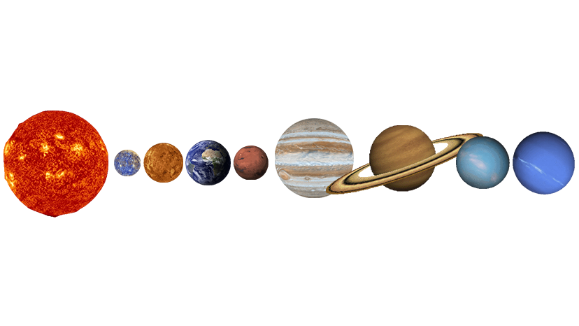
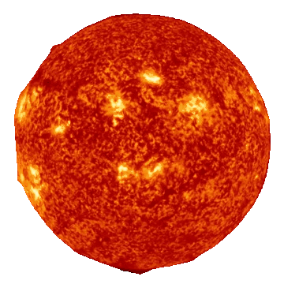
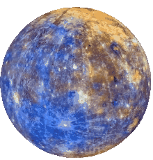
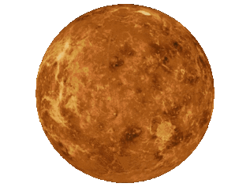
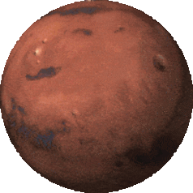
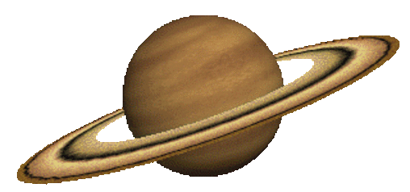
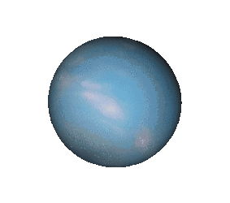
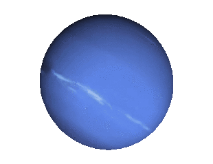

Solar System
The Solar System is located in the Milky Way, a barred spiral galaxy with a diameter of about 100,000 light-years containing more than 100 billion stars. The Sun resides in one of the Milky Way's outer spiral arms, known as the Orion–Cygnus Arm or Local Spur. The Sun lies about 26,660 light-years from the Galactic Center, and its speed around the center of the Milky Way is about 220 km/s, so that it completes one revolution every 240 million years. This revolution is known as the Solar System's galactic year. The solar apex, the direction of the Sun's path through interstellar space, is near the constellation Hercules in the direction of the current location of the bright star Vega. The plane of the ecliptic lies at an angle of about 60° to the galactic plane. The Solar System's location in the Milky Way is a factor in the evolutionary history of life on Earth. Its orbit is close to circular, and orbits near the Sun are at roughly the same speed as that of the spiral arms. Therefore, the Sun passes through arms only rarely. Because spiral arms are home to a far larger concentration of supernovae, gravitational instabilities, and radiation that could disrupt the Solar System, this has given Earth long periods of stability for life to evolve. However, the changing position of the Solar System relative to other parts of the Milky Way could explain periodic extinction events on Earth, according to the Shiva hypothesis or related theories, but this remains controversial. The Solar System lies well outside the star-crowded environs of the galactic centre. Near the centre, gravitational tugs from nearby stars could perturb bodies in the Oort cloud and send many comets into the inner Solar System, producing collisions with potentially catastrophic implications for life on Earth. The intense radiation of the galactic centre could also interfere with the development of complex life. Stellar flybys that pass within 0.8 light-years of the Sun occur roughly once every 100,000 years. The closest well-measured approach was Scholz's Star, which approached to 52+23 −14 kAU of the Sun some 70+15 −10 kya, likely passing through the outer Oort cloud.
Sun
The Sun, also referred to as "Sol", is the star at the center of the Solar System. Sun's mass accounts for some 99.86% of the total mass of the Solar System. It is a nearly perfect ball of hot plasma, heated to incandescence by nuclear fusion reactions in its core. The Sun radiates this energy mainly as light, ultraviolet, and infrared radiation, and is the most important source of energy for life on Earth. The mean distance of the Sun from the Earth is approximately 149.6 million kilometres (1Â AU). On average, it takes light from the Sun about 8 minutes and 19 seconds to reach the Earth. The Sun has eight known planets orbiting around it. This includes four terrestrial planets (Mercury, Venus, Earth, and Mars), two gas giants (Jupiter and Saturn), and two ice giants (Uranus and Neptune).
Mercury
 swipeMercury is the smallest planet in the Solar System and the closest to the Sun. Its orbit around the Sun takes 87.97 Earth days, the shortest of all the Sun's planets. It is named after the Roman god Mercurius (Mercury), god of commerce, messenger of the gods, and mediator between gods and mortals, corresponding to the Greek god Hermes (Ἑρμῆς).
Venus
 swipeVenus is the second planet from the Sun, orbiting it the closest to Earth. It is sometimes called Earth's "sister" or "twin" planet as it is almost as large and has a similar composition. Venus, like Mercury, appears in Earth's sky never far from the Sun, either as morning star or evening star with a synodic period of 1.6 years. It is, after the Moon, the brightest natural object in Earth's sky, capable of casting visible shadows on Earth at dark conditions and being visible to the naked eye in broad sunlight.
Earth
 swipe
swipe
Earth is the third planet from the Sun and the only astronomical object known to harbor life. While large volumes of water can be found throughout the Solar System, only Earth sustains liquid surface water. About 71% of Earth's surface is made up of the ocean, dwarfing Earth's polar ice, lakes, and rivers. The remaining 29% of Earth's surface is land, consisting of continents and islands. Earth's surface layer is formed of several slowly moving tectonic plates, interacting to produce mountain ranges, volcanoes, and earthquakes. Earth's liquid outer core generates the magnetic field that shapes Earth's magnetosphere, deflecting destructive solar winds.
Mars
 swipeMars is the fourth planet from the Sun and the second-smallest planet in the Solar System, being larger than only Mercury. In the English language, Mars is named for the Roman god of war. Mars is a terrestrial planet with a thin atmosphere (less than 1% that of Earth's), and has a crust primarily composed of elements similar to Earth's crust, as well as a core made of iron and nickel. Mars has surface features such as impact craters, valleys, dunes, and polar ice caps. It has two small and irregularly shaped moons: Phobos and Deimos.
Jupiter
 swipe
swipe
Jupiter is the fifth planet from the Sun and the largest in the Solar System. It is a gas giant with a mass more than two and a half times that of all the other planets in the Solar System combined, but slightly less than one-thousandth the mass of the Sun. Jupiter is the third brightest natural object in the Earth's night sky after the Moon and Venus, and it has been observed since prehistoric times. It was named after the Roman god Jupiter, the king of the gods.
Saturn
 swipeSaturn is the sixth planet from the Sun and the second-largest in the Solar System, after Jupiter. It is a gas giant with an average radius of about nine and a half times that of Earth. It has only one-eighth the average density of Earth; however, with its larger volume, Saturn is over 95 times more massive.
Uranus
 swipeUranus is the seventh planet from the Sun. Its name is a reference to the Greek god of the sky, Uranus (Caelus), who, according to Greek mythology, was the great-grandfather of Ares (Mars), grandfather of Zeus (Jupiter) and father of Cronus (Saturn). It has the third-largest planetary radius and fourth-largest planetary mass in the Solar System. Uranus is similar in composition to Neptune, and both have bulk chemical compositions which differ from that of the larger gas giants Jupiter and Saturn. For this reason, scientists often classify Uranus and Neptune as "ice giants" to distinguish them from the other giant planets.
Neptune
 swipeNeptune is the eighth planet from the Sun and the farthest known solar planet. In the Solar System, it is the fourth-largest planet by diameter, the third-most-massive planet, and the densest giant planet. It is 17 times the mass of Earth, and slightly more massive than its near-twin Uranus. Neptune is denser and physically smaller than Uranus because its greater mass causes more gravitational compression of its atmosphere. It is referred to as one of the solar system's two ice giant planets (the other one being Uranus). Being composed primarily of gases and liquids, it has no well-defined "solid surface". The planet orbits the Sun once every 164.8 years at an average distance of 30.1 AU (4.5 billion km; 2.8 billion mi). It is named after the Roman god of the sea and has the astronomical symbol ♆, representing Neptune's trident.